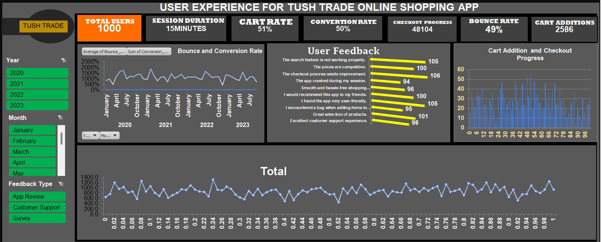

USER EXPERIENCE AND CUSTOMER BEHAVIOR ANALYSIS FOR TUSH TRADE SHOPPING APP
BUSINESS PROBLEM
Tush Trade is focused on enhancing user experience and optimizing key metrics such as cart rate, conversion rate, and checkout progress within their online shopping app. However, there are challenges such as a high bounce rate and issues identified through user feedback, which are affecting overall customer satisfaction and conversion rates. The business problems identified include:
- High Bounce Rate: Almost half of the users leave the app without making a purchase, indicating potential issues with user engagement or the shopping experience.
- Checkout Abandonment: There is a significant drop-off between users adding items to their cart and completing the checkout process.
- User Feedback: Multiple issues have been reported by users, including problems with the search feature, checkout process, and app stability, which could be negatively impacting the user experience and conversion rate.
INSIGHTS AND FINDINGS
An in-depth analysis of the dashboard reveals the following critical insights:- User Engagement (Total Users): The app has 1,000 total users with an average session duration of 15 minutes. This indicates that users are engaging with the app, but the engagement is not necessarily translating into conversions.
- Cart Rate and Conversion Rate: While 51% of users add items to their cart, only 50% of these proceed to checkout, suggesting a significant drop-off in the purchasing process.
- Bounce and Conversion Rate: The bounce rate is notably high at 49%, meaning that nearly half of the users exit the app after viewing only one page. This trend needs to be addressed to improve conversion rates.
- Conversion Rate: The conversion rate is at 50%, meaning that only half of the users who start the checkout process actually complete it. This indicates a need for streamlining the checkout process or addressing potential barriers.
- User Feedback: The most common issues reported by users include problems with the search feature, the checkout process needing improvement, and occasional app crashes. Positive feedback includes the app being user-friendly, competitive prices, and excellent customer support, suggesting areas of strength that can be leveraged.
- User Recommendation: Despite some issues, users would recommend the app to friends, showing that there is strong brand loyalty, which can be further capitalized upon.
- Cart Addition and Checkout Progress: Analysis of the cart addition and checkout progress indicates fluctuations throughout the user journey. There are notable peaks and troughs, indicating inconsistency in user behavior, which could be influenced by the issues identified in user feedback. A total of 48,104 items were checked out, and 2,586 items were added to carts. This disparity highlights a significant portion of users who abandon their cart before completing the purchase.
- Trend Over Time: The data displays seasonal or monthly variations in bounce rates and conversion rates over the years, indicating potential external factors affecting user behavior. For instance, peaks in January could be related to New Year sales, while dips in mid-year may need further investigation.
Methods used
The following steps were carried out using Excel to analyze and visualize the data presented on the dashboard:- Data Collection: Data was gathered from the Tush Trade app’s backend, encompassing user metrics such as session duration, cart rate, conversion rate, and user feedback over multiple years.
- Data Cleaning and Preprocessing: Data was cleaned in Excel to handle any missing values, remove duplicates, and ensure consistency across different time periods and categories.
- Data Analysis: Pivot tables and functions were used to summarize and analyze key metrics such as bounce rate, conversion rate, and cart additions. Also, Trend analysis was performed to identify patterns in user engagement and behavior over time.
- Data Visualization: Excel charts, including line charts and bar charts, were created to visualize trends and key metrics such as bounce rates, cart additions, and user feedback. Conditional formatting and custom cell styles were employed to highlight critical insights such as high bounce rates and user feedback trends.
- Dashboard Design: The dashboard was designed to present a comprehensive overview of user experience metrics, with a focus on key performance indicators (KPIs) that are critical to business success. Interactive elements such as slicers were used to allow for filtering by year, month, and feedback type, providing a dynamic analysis experience.
RECOMMENDATIONS
Based on the insights derived from the dashboard, the following recommendations are made:- Improve the Search Feature: Address the issues users have reported with the search functionality, as this is critical to helping users find products quickly and easily.
- Streamline the Checkout Process: Given the significant drop-off between cart addition and checkout, the checkout process should be simplified and optimized to reduce friction and increase conversion rates.
- Enhance App Stability: Fix any bugs and improve the app’s stability to reduce crashes, as these technical issues directly impact user experience and satisfaction.
- Leverage Positive Feedback: Highlight the app’s strengths, such as user-friendliness and competitive pricing, in marketing campaigns to attract more users and build on existing brand loyalty.
- Reduce Bounce Rate: Implement strategies to reduce the bounce rate, such as improving the landing page, offering personalized product recommendations, or providing incentives for first-time buyers.